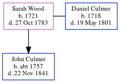

Sarah Culmer (née Wood) 1721 - 1783
[ Home ] | [ Calendar ] | [ Surnames Index ] | [ Errors ] | [ Family History ]Sarah Wood, the 6 times great-grandmother of Nigel Horne, was born in Kent, England in 1721 and married Daniel Culmer (with whom she had 1 child, John) in Thanington, Kent, England on 2 Feb 17502.
She died on 27 Oct 1783 in Kent1 and was buried at All Saints Church, Church Lane, Stourmouth, Kent on 31 Oct 17831,3,4,5.
Children
- John was born c. 1757
Citations
- Kent, England, Tyler Index to Parish Registers, 1538-1874 Online publication - Provo, UT, USA: Ancestry.com Operations, Inc., 2010. This collection was indexed by Ancestry World Archives Project contributors.Original data - Frank Watt Tyler. The Tyler Collection. Canterbury, Kent, England: The Institute of Herald
- England Marriages 1538-1973 - Findmypast
- Kent, Canterbury Archdeaconry Burials - Findmypast
- England Deaths & Burials 1538-1991 - Findmypast
- England Deaths & Burials 1538-1991 - Findmypast
Media
England, Boyd's marriage indexes, 1538-1850 - GBPRS/M/710186700/2
Kent, Canterbury Archdeaconry burials 1538-1988 - GBPRS/CANT/D/95509643
England Marriages 1538-1973 - R_847921411/2
England Marriages 1538-1973 - R_848249640/2
England Deaths & Burials 1538-1991 - R_276090154
Britain, marriage licences - GBPRS/COA/MARRLICENCE/00151023/2
Family Tree
Map
Generated by ged2site. Last updated on Jul 3, 2024
Known Issues
Birth date (1721) has no citations